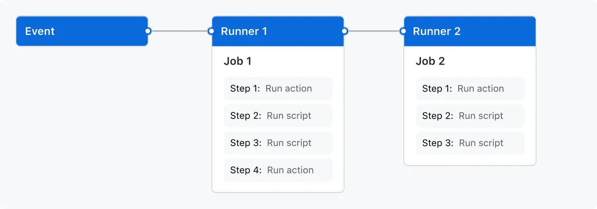

I was reading a blog by Chad Carlson about Measuring Deployment Success with GitHub Actions and I noticed a stylish deployment counter featured at the bottom of their website, highlighting their platform’s successful deployments. While a PaaS provider like platform.sh will have many more deployments than my personal website, I felt inspired to create a similar counter and integrate it into my CI/CD pipeline.
For some context, my website is a static website built using hugo and hosted on Azure as a Static Web App. The entire codebase resides in a GitHub repository, and I’ve set up a streamlined CI/CD pipeline to trigger deployment to Azure upon a specific event, successful commits.
For my approach, I’ll use Github Actions to create a workflow that increments a counter that will keep track of all of my successful deployments. This counter will be called deployment_counter.txt, will contain an integer and will be located inside folder called counter.
What is a GitHub Actions Workflow?
A workflow is a configurable automated process that will run one or more jobs. Workflows are defined by a YAML file checked in to your repository and will run when triggered by an event in your repository, or they can be triggered manually, or at a defined schedule.
Workflows are defined in the .github/workflows directory in a repository, and a repository can have multiple workflows, each of which can perform a different set of tasks.
A workflow must contain the following basic components:
- One or more
eventsthat will trigger the workflow. - One or more
jobs, each of which will execute on a runner machine and run a series of one or moresteps. - Each
stepcan either run a script that you define or run an action, which is a reusable extension that can simplify your workflow.

Understanding the workflow
First, let’s take a look at the finished workflow:
name: Update Deployment Counter
on:
workflow_run:
workflows: [Azure Static Web Apps CI/CD]
branches: [main]
types:
- completed
jobs:
update_counter:
runs-on: ubuntu-latest
if: ${{ github.event.workflow_run.conclusion == 'success' }}
steps:
- name: Checkout Repository
uses: actions/checkout@v2
- name: Increment Counter
id: increment_counter
run: ./scripts/counter.sh
- name: Update resources
uses: test-room-7/action-update-file@v1
with:
file-path: counter/deployment_counter.txt
commit-msg: Update counter
github-token: ${{ secrets.ACTIONSCOUNTER_TOKEN }}Let’s analyze each line.
name: Update Deployment Counteron:on:
workflow_run:
workflows: [Azure Static Web Apps CI/CD]
branches: [main]workflow_run event, you can specify what branches the triggering workflow must run on in order to trigger your workflow.
For example, this workflow will only run when the workflow named Azure Static Web Apps CI/CD runs on a branch whose name starts with main.
The workflow Azure Static Web Apps CI/CD monitors the repository for changes. As commits are pushed to the main branch, the application is built using another workflow.
types:
- completedjobs:Update deployment counter workflow.
update_counter:update_counter. The child keys will define properties of the job.
runs-on: ubuntu-latestif: ${{ github.event.workflow_run.conclusion == 'success' }}steps based on the result of the triggering workflow. In this case, this workflow will run based on the successful conclusion of the Azure Static Web Apps CI/CD workflow.
- name: Checkout Repository
uses: actions/checkout@v2uses keyword specifies that this step will run v2 of the actions/checkout action. This is an action that checks out your repository onto the runner, allowing you to run scripts or other actions against your code (such as build and test tools). You should use the checkout action any time your workflow will use the repository’s code.
- name: Increment Counter
id: increment_counter
run: ./scripts/counter.shbash script to increment the number stored in the counter.txt file.
- name: Update resources
uses: test-room-7/action-update-file@v1
with:
file-path: counter/deployment_counter.txt
commit-msg: Update counter
github-token: ${{ secrets.ACTIONSCOUNTER_TOKEN }}step will push the changes made in the previous step.
file-path: Specifies the path where the changes were made.
commit-msg: Provides a commit message.
github-token: Defines the name of the GitHub repository secret.
ACTIONSCOUNTER_TOKEN Gives the workflow permissions to make changes to the repository. This secret is linked to a token that lists the allowed actions the workflow can perform.
Avoiding an infinite loop
You may have realized that when the Azure Static Web Apps CI/CD workflow is triggered due to a successful change in the repository, it, in turn, fires off the Update Deployment Counter workflow. The latter is responsible for updating the text file that logs successful deployments. However, this update acts as an event in itself, triggering the Azure Static Web Apps CI/CD workflow yet again, thus creating an infinite loop.
Thankfully, github actions gives us many tools to use in our workflows.
Let’s take a look to a snippet of the Azure Static Web Apps CI/CD workflow:
name: Azure Static Web Apps CI/CD
on:
push:
paths-ignore: counter/deployment_counter.txt
branches:
- main
pull_request:
paths-ignore: counter/deployment_counter.txt
types: [opened, synchronize, reopened, closed]
branches:
- mainHere I used the paths-ignore filter to specify a path that will be ignored by the workflow. Meaning that any changes made to deployment_counter.txt will not be considered an event and therefore the workflow will not be triggered.
Using markdown we can read the file stored in counter/deployment_counter.txt:
This site has 164 successful deployments!
This number is updated automatically with every successful deployment.
This practical implementation underscores the potency of controlled workflows, code management, continuous integration and continuous delivery.
You can also see the counter implemented on my home page